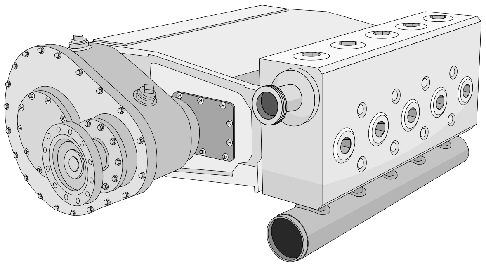
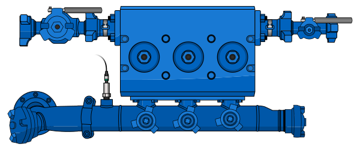
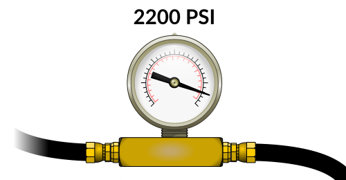
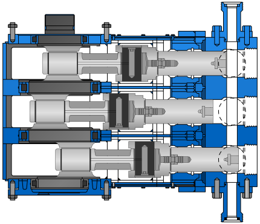
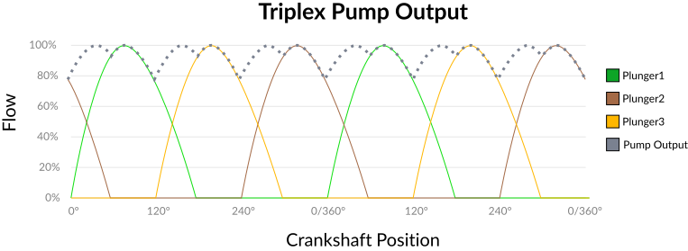
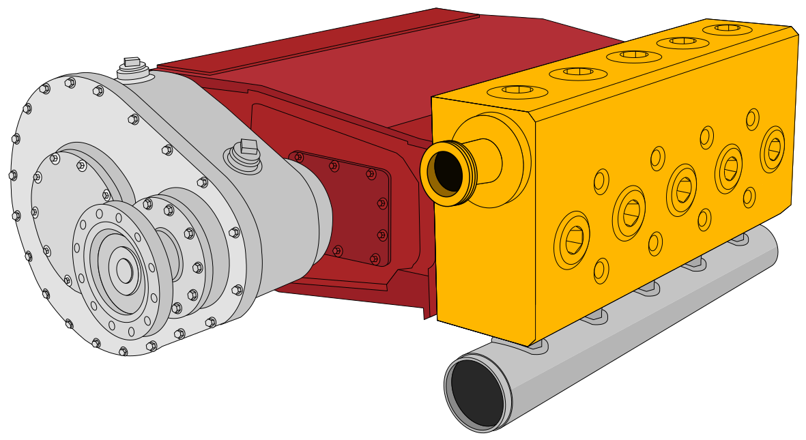
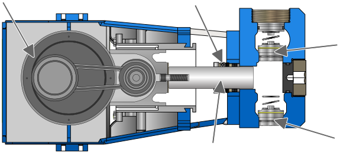

Project — Reciprocating pumps
By Abdiaziz Abdi
Plunger Pumps
A plunger retracts and draws fluid in. It reverses and slams the fluid out. Valves make sure it only ever travels one way.

Objectives
- 01Explain the basic design principles of reciprocating plunger pumps.
- 02Identify the major zones and components of plunger pumps.
01 · A Series Of Plungers
A Series Of Plungers
The whole machine is one simple motion, repeated and offset — a plunger pushed into a bore, and two valves deciding which way the fluid may go.
Think of a plunger pump just like a basic bottle jack used to lift heavy loads.

- 01A plunger retracts, creating suction that draws fluid in.Suction stroke
- 02The plunger then reverses, and slams the fluid out.Discharge stroke
- 03Suction and discharge valves ensure that fluid can only flow through the pump in one direction.Check valves
Imagine several of these plungers in a staggered rotational sequence, and that’s the basics of a plunger pump!
The only significant difference between a triplex pump and a quintuplex pump is the number of pumping galleries. A triplex pump has 3 galleries, and a quintuplex pump has 5.
You can find nearly any size of plunger pump on the market — simplex (1), duplex (2), quadruplex (4), etc. You can even find nonuplex (9) pumps! These larger pumps are relatively rare, because it is often more practical to use two smaller pumps in parallel to achieve such high flow rates.
This lesson will focus on triplex and quintuplex pumps, but the operating principles are the same for any variety of plunger pump.
02 · High Pressure Pump
High Pressure Pump
A common name for the machine, and a slightly misleading one.

You may hear of a plunger pump referred to as a high pressure pump. It’s not accurate to say that the pump creates high pressure. This statement refers to the pump’s ability to continue pumping at a specified flow rate even under extremely high pressure.
High pumping pressures are caused by resistance to flow somewhere downstream from the pump. Plunger pumps are able to keep pumping at a set flow rate, even against strong resistance. This ability means that plunger pumps are positive displacement pumps.
Want to brush up on positive versus non-positive pumping? The original session links out to a refresher.
03 · Staggered Plungers
Staggered Plungers
Three separate pulses, overlapped until they read as one continuous stream.
Plunger pumps get their names from the number of reciprocating plungers/pistons that force the fluid through the fluid end. A triplex has 3, a quintuplex has 5, and so on.
These plungers move in a staggered sequence to provide a steady rate of flow out of the pump. At any point in time, each plunger is at a different place in its stroke than any of the other plungers.
The concept of staggered plunger positions for even flow is similar to how the design of a crankshaft in a piston engine makes sure each piston has a staggered stroke cycle for smooth power.


Even though there are three distinct pulses of flow with each cycle of the triplex pump crankshaft, the overlapping of the plunger strokes smoothes the output.
04 · Zones
Zones
A plunger pump can be divided into two zones: the fluid end and the power end.

Power End
The mechanism
The power end contains the mechanism to operate the plungers.
- 01Crankshaft
- 02Connecting rods
- 03Crossheads
- 04Wrist pins
Fluid End
The wetted zone
The fluid end refers strictly to the zone that liquid is sucked into and forced out of.
- 01Cylinder block
- 02Plungers with packing assemblies
- 03Suction valve assemblies
- 04Discharge valve assemblies

Called out in Fig. 08
- 01CrankshaftPower end
- 02Packing assemblyFluid end
- 03PlungerFluid end
- 04Discharge valveFluid end
- 05Suction valveFluid end
The power end component group includes the crankshaft, the connecting rods, the crossheads and their wrist pins.
The fluid end component group includes the cylinder block, plungers with their packing assemblies, and the suction and discharge valve assemblies.
05 · Try It Out
Try It Out
This animation shows a single gallery of a plunger pump. Click and drag on the slider to adjust the speed of the crankshaft. Keep an eye on the suction and discharge valves; each opens and closes with every cycle of the pump.
The triplex pump puts three plunger and gallery combinations together and runs them in a staggered sequence.
The quintuplex does the same, but with five plunger and gallery combinations. The result is a steady output, with minimal surging.
05a · Schematic
Simplified gallery schematic
A stripped-back kinematic view of the same gallery — crankshaft, connecting rod, crosshead, plunger, and the two valves reacting to stroke direction.